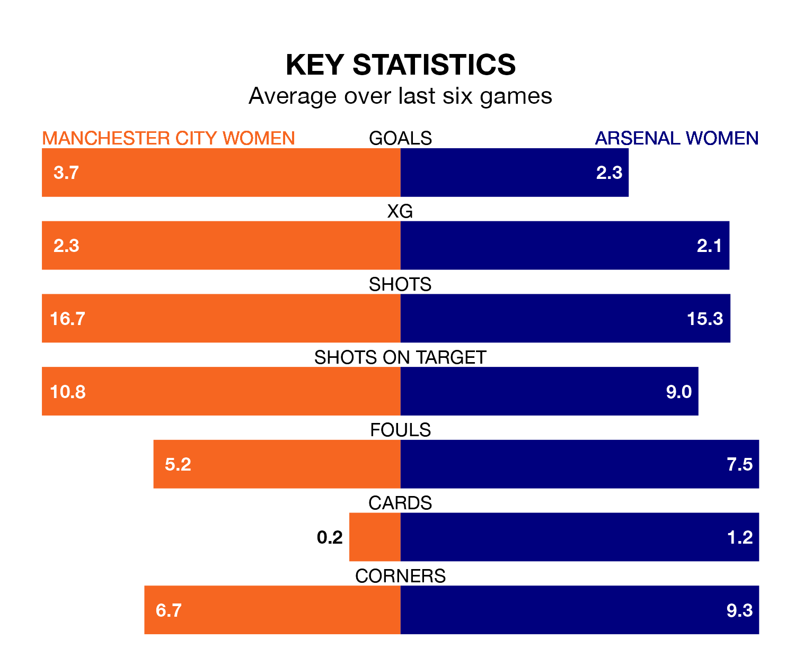

Two of the FA Women's Super League's top sides face each other at the Academy Stadium in Sunday's early kick-off, when table-topping Manchester City Women host third-placed Arsenal Women.
Manchester City have picked up 17 wins and one draw from 20 games so far this season, and sit eight points above the visitors going into the 2.15pm match.
The Gunners, meanwhile, have won 14 and drawn two, picking up 44 points.
With 58 goals in 20 games so far this season, Manchester City are the league's highest scorers with 2.9 goals per game. And they are conceding fewer than average, letting in 12 goals at a rate of 0.6 per game.
Arsenal are also above average scorers, with 2.3 goals per game, compared to a league average of 1.6. They have conceded 0.9 goals per game.
City are in exceptional form in the FA Women's Super League, with six wins and no losses from their last six games.
With four wins and a draw over that period, the Gunners's form is worse – they have taken 13 points from 18, compared to the hosts' 18.
In Khadija Monifa Shaw, Manchester City have the league's most on-form striker so far this season. She has notched 21 goals in 18 appearances.
Her goal rate of one every 66 minutes is much quicker than that of Alessia Russo, the away team's top scorer with a goal every 158 minutes, and a total of 10 goals in 20 games.
In the last 10 years, Manchester City and Arsenal have played each other on 29 occasions. Manchester City won 14 of them, Arsenal 13, and they drew twice.
On average, City scored 1.1 goals and the Gunners 1.2 in those matches.
Their last meeting was on February 11, when Manchester City won 1-0 away.
Manchester City's last match was on Sunday, a 4-0 win against Bristol City Women, with Mary Fowler (two), Alex Greenwood and Amy Rodgers (own goal) getting the goals for City.
Arsenal drew 1-1 with Everton Women last time out, also on April 28, with Russo on the scoresheet.
Sunday's match will be refereed by Rebecca Welch, who has taken charge of six FA Women's Super League games so far this season, issuing one red card and booking 33 players. She has awarded two penalties.
The last Manchester City game Welch refereed was a 2-1 away loss to Arsenal Women on November 5. Her last Arsenal match was their 3-1 loss away at Chelsea Women on March 15.
Updated: 12:00 (UTC), 02/05/24